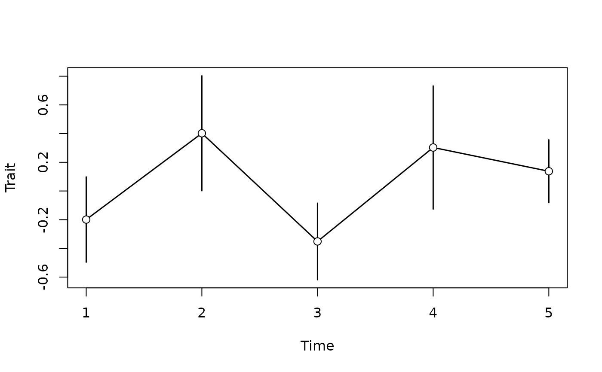

simulate ornstein-uhlenbeck (OU) process (specimen level)
Source:R/ornstein_uhlenbeck_sl.R
ornstein_uhlenbeck_sl.RdSimulates an Ornstein-Uhlenbeck process on specimen level (_sl). The mean trait value is simulated using the Euler-Maruyama method. The process is simulated on a scale of 0.25 * min(diff(t)) and then interpolated to the values of t. At each sampling location there are n_per_sample specimens that are normally distributed around the mean trait value with a variance of intrapop_var.
Note that different parametrizations of OU processes are used in the literature. Here we use the parametrization common in mathematics. This translates to the parametrization used in evolutionary biology (specifically, the one in Hansen (1997)) as follows:
sigmais identicalmuused in theStratPalpackage corresponds tothetasensu Hansen (1997)thetaas used in theStratPalpackage corresponds toalphasensu Hansen (1997)
Usage
ornstein_uhlenbeck_sl(
t,
mu = 0,
theta = 1,
sigma = 1,
y0 = 0,
intrapop_var = 1,
n_per_sample = 10
)Arguments
- t
times at which the process is simulated. Can be heterodistant
- mu
number, long term mean
- theta
number, mean reversion speed
- sigma
positive number, strength of randomness
- y0
number, initial value (value of process at the first entry of t)
- intrapop_var
intrapopulation variance, determines how much specimens from the same population vary
- n_per_sample
integer, number of specimens sampled per population/sampling locality
Value
an object of S3 class pre_paleoTS, inherits from timelist and list. The list has two elements: t, containing a vector of times of sampling, and vals, a list of trait values of the same length as t, with element containing trait values of individual specimens. This object can be transformed using apply_taphonomy, apply_niche or time_to_strat, and then reduced to a paleoTS object using reduce_to_paleoTS. This can then be used to test for different modes of evolution.
See also
ornstein_uhlenbeck()to model mean trait values,reduce_to_paleoTS()to transform outputs intopaleoTSformatstasis_sl(),strict_stasis_sl()andrandom_walk_sl()to simulate other modes of evolution
Examples
library("paleoTS")
x = ornstein_uhlenbeck_sl(1:5)
y = reduce_to_paleoTS(x) # turn into paleoTS format
plot(y) # plot using the paleoTS package

# see also
#vignette("paleoTS_functionality")
#for details and advanced usage